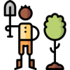

Етика відносин"людини-природи" в траційниму суспільстві
Етика відносин"людини-природи" в індустріальному суспільстві
Етика відносин"людини-природи" в інформаційному суспільстві
Природознавець, засновник геохімії, біогеохімії та радіогеології, вчення про біосферу.
Тесла найбільш відомий своїми винаходами у галузі електрики, магнетизму та електротехніки.
Ілон Маск директор Tesla Inc, що керує заводом Tesla,які на електриці та не забруднюють повітря
український учений-еколог. Доктор біологічних наук, професор. Академік АН ВШ України з 2007 р. З 2018 року ректор Національного авіаційного університету.